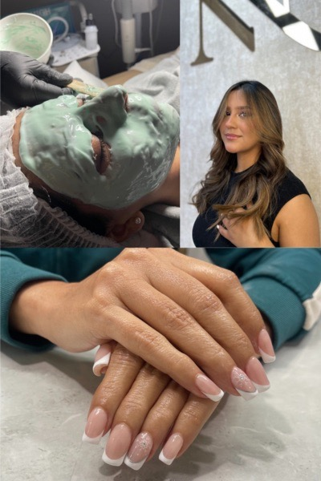

Brilla esta Navidad: Tendencias de Belleza para cerrar el año en Chía
Por el equipo de Narbo's Salón Spa • 6 Diciembre 2025

Tabla de Contenidos
Diciembre ha llegado a Chía y con él, la temporada de celebraciones. En Narbo's Salón Spa, sabemos que buscas lucir espectacular para las novenas, la cena de Navidad y la fiesta de fin de año. Si has estado buscando una "peluquería cerca de mí" que entienda exactamente lo que necesitas para estas fechas, has llegado al lugar indicado. Aquí te contamos qué estilos están marcando tendencia este mes.
El Color de la Temporada: Balayage y Tonos Luminosos 🎨
No hay mejor momento para un cambio de look que el cierre de año. Según nuestros expertos, el balayage caramelo y el balayage rubio siguen siendo los reyes indiscutibles para iluminar el rostro.
- Si eres morena, un balayage color miel o caramelo aportará calidez y brillo sin cambios drásticos.
- Si prefieres algo más atrevido, las mechas babylights son ideales para dar dimensión a tu cabello.
Recuerda que utilizamos las mejores marcas de tintes para el cabello para garantizar la salud de tu fibra capilar.
Manos que Celebran: Uñas Acrílicas y Diseños Elegantes 💅
Tus manos serán protagonistas al momento de brindar. Este mes, la tendencia en uñas acrílicas se aleja de lo recargado y busca la sofisticación.
- Diseños de uñas elegantes: Opta por tonos rojos, clásicos, dorados, o el efecto "glazed" que está muy de moda.
- Uñas cortas bonitas: No necesitas tenerlas extralargas para que luzcan bien; un buen manicure con decoración sutil es perfecto para la elegancia de la temporada.
Relájate antes de la fiesta: Tu Spa en Chía 💆♀️
El ajetreo de diciembre puede ser agotador. Antes de la gran noche, regálate un momento de paz. Aunque muchos buscan "spa Bogota", recuerda que en Chía tienes un oasis de tranquilidad cerca de ti. Ofrecemos masajes relajantes y tratamientos faciales para que tu piel luzca fresca y descansada en las fotos de fin de año.
Peinados para Fiestas 💇♀️
¿No sabes cómo peinarte para la Noche Buena? Los peinados con trenzas y los recogidos fáciles y elegantes son una apuesta segura. Pregunta por nuestros estilistas expertos en peinados para niñas y damas.
¡La agenda de diciembre se llena rápido! No dejes tu imagen para última hora.
Agendar Cita por WhatsAppVisítanos en Narbo's Salón Spa, tu mejor opción de peluquería y belleza en Chía, Cundinamarca.